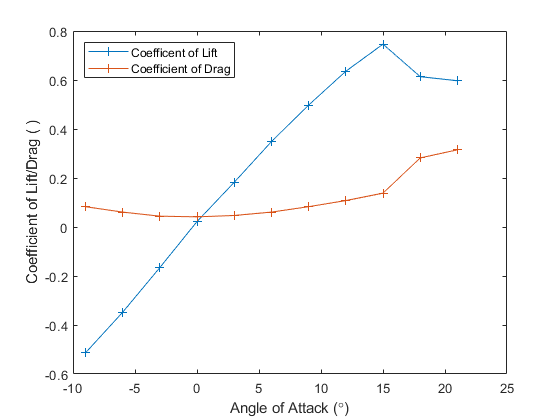
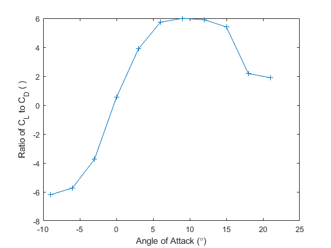
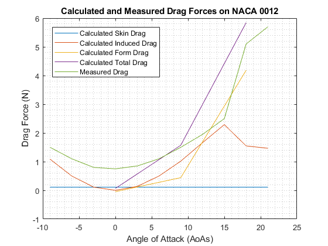

Contents
clear all
close all
Part 1
Temp_I = 21.2+273.15;
Temp_F = 22.6+273.15;
Pres_I = 102268;
Pres_F = 102235;
R = 8.314;
MW = 28.97/1000;
Density_I = (MW*Pres_I)/(R*Temp_I);
Density_F = (MW*Pres_F)/(R*Temp_F);
Part 2
AoA_Foil_0 = [1.6,3.2,2.95,3.54,3.85,3.57,3.79,3.65,3.52,3.05,3.31,3.16,2.98,2.55,3.65,3.44,3.21,3.5,3.4,3.31,2.91,3.14,.49].*0.0254;
AoA_Foil_9 = [1.6,3.2,7,5.9,5.25,4.4,4.2,3.8,3.55,3.05,3.25,3.15,1.6,2.2,2.6,2.65,2.7,3.05,3.1,3.05,2.7,2.9,.45].*0.0254;
AoA_Foil_18 = [1.6,3.25,4.05,3.95,4.00,3.7,4.1,4.15,4.2,3.65,4.0,3.85,1.5,1.9,2.25,2.35,2.5,2.9,3.0,3.1,2.85,3.25,0.5].*0.0254;
Den_Water = 998;
Gravity = 9.81;
Pres_Foil_0 = Pres_I - Den_Water*Gravity.*AoA_Foil_0;
Pres_Foil_9 = Pres_I - Den_Water*Gravity.*AoA_Foil_9;
Pres_Foil_18 = Pres_I - Den_Water*Gravity.*AoA_Foil_18;
Part 3
Vel_Foil_0 = sqrt((2/Density_I)*(Pres_Foil_0(1)-Pres_Foil_0(2)));
Vel_Foil_9 = sqrt((2/Density_I)*(Pres_Foil_9(1)-Pres_Foil_9(2)));
Vel_Foil_18 = sqrt((2/Density_I)*(Pres_Foil_18(1)-Pres_Foil_18(2)));
Vel_Foil_Mean = mean([Vel_Foil_0,Vel_Foil_9,Vel_Foil_18]);
Part 4
AoAs = [-9,-6,-3,0,3,6,9,12,15,18,21];
L_Force = [-9.3,-6.3,-3,0.4,3.3,6.3,9,11.5,13.5,11.1,10.8];
D_Force = [1.5,1.1,0.8,0.75,0.85,1.1,1.5,1.95,2.5,5.1,5.7];
A = .15*.30;
C_L = L_Force/(.5*Density_I*(Vel_Foil_Mean^2)*A);
C_D = D_Force/(.5*Density_I*(Vel_Foil_Mean^2)*A);
C_L_Fit = polyfit(AoAs,C_L,1);
Zero = -C_L_Fit(2)/C_L_Fit(1);
CL = C_L';
CD = C_D';
Part 5
f1 = figure(1);
plot(AoAs,C_L,'-+',AoAs,C_D,'-+')
xlabel('Angle of Attack (\circ)')
ylabel('Coefficient of Lift/Drag ( )')
legend('Coefficent of Lift','Coefficient of Drag','location','northwest')

Part 6
f2 = figure(2);
plot(AoAs,C_L./C_D,'-+')
xlabel('Angle of Attack (\circ)')
ylabel('Ratio of C_L to C_D ( )')

Part 7
AoA_0_T = [AoA_Foil_0(1),AoA_Foil_0(3:12),AoA_Foil_0(12)];
AoA_9_T = [AoA_Foil_9(1),AoA_Foil_9(3:12),AoA_Foil_9(12)];
AoA_18_T = [AoA_Foil_18(1),AoA_Foil_18(3:12),AoA_Foil_18(12)];
AoA_0_B = [AoA_Foil_0(1),AoA_Foil_0(13:22),AoA_Foil_0(22)];
AoA_9_B = [AoA_Foil_9(1),AoA_Foil_9(13:22),AoA_Foil_9(22)];
AoA_18_B = [AoA_Foil_18(1),AoA_Foil_18(13:22),AoA_Foil_18(22)];
AoA_0_T_1 = AoA_0_T-(AoA_Foil_0(end));
AoA_9_T_1 = AoA_9_T-(AoA_Foil_9(end));
AoA_18_T_1 = AoA_18_T-(AoA_Foil_18(end));
AoA_0_B_1 = AoA_0_B-(AoA_Foil_0(end));
AoA_9_B_1 = AoA_9_B-(AoA_Foil_9(end));
AoA_18_B_1 = AoA_18_B-(AoA_Foil_18(end));
Pres_0_1_T = -Den_Water*Gravity.*AoA_0_T_1;
Pres_9_1_T = -Den_Water*Gravity.*AoA_9_T_1;
Pres_18_1_T = -Den_Water*Gravity.*AoA_18_T_1;
Pres_0_1_B = -Den_Water*Gravity.*AoA_0_B_1;
Pres_9_1_B = -Den_Water*Gravity.*AoA_9_B_1;
Pres_18_1_B = -Den_Water*Gravity.*AoA_18_B_1;
Pres_0_T = Pres_0_1_T(1:12);
Pres_9_T = Pres_9_1_T(1:12);
Pres_18_T = Pres_18_1_T(1:12);
Pres_0_B = Pres_0_1_B(1:12);
Pres_9_B = Pres_9_1_B(1:12);
Pres_18_B = Pres_18_1_B(1:12);
c = .15;
t = .12;
L = .30;
x_top = [0,0.76, 3.81, 11.43, 19.05, 38, 62, 80.77, 101.35, 121.92, 137.16,150]./1000;
x_bot = [0,1.52,7.62,15.24,22.86,41.15,59.44,77.73,96.02,114.3,129.54,150]./1000;
y_top =5*c*t.*( (.2969.*sqrt(x_top/c))-(.1260.*x_top/c)-(.3516.*(x_top/c).^2)+(.2843.*(x_top/c).^3)-(.1015.*(x_top/c).^4));
y_bot =-5*c*t.*( (.2969.*sqrt(x_bot/c))-(.1260.*x_bot/c)-(.3516.*(x_bot/c).^2)+(.2843.*(x_bot/c).^3)-(.1015.*(x_bot/c).^4));
for i = 1:length(y_top)-1
theta = atand((y_top(i+1)-y_top(i))/(x_top(i+1)-x_top(i)));
Drag_Top_0(i) = L*(x_top(i+1)-x_top(i))*((Pres_0_T(i)+Pres_0_T(i+1))/2)*tand(theta);
Drag_Top_9(i) = L*(x_top(i+1)-x_top(i))*((Pres_9_T(i)+Pres_9_T(i+1))/2)*tand(theta);
Drag_Top_18(i) = L*(x_top(i+1)-x_top(i))*((Pres_18_T(i)+Pres_18_T(i+1))/2)*tand(theta);
Lift_Top_0(i) = -L*(x_top(i+1)-x_top(i))*((Pres_0_T(i)+Pres_0_T(i+1))/2);
Lift_Top_9(i) = -L*(x_top(i+1)-x_top(i))*((Pres_9_T(i)+Pres_9_T(i+1))/2);
Lift_Top_18(i) = -L*(x_top(i+1)-x_top(i))*((Pres_18_T(i)+Pres_18_T(i+1))/2);
b_theta = atan((y_bot(i+1)-y_bot(i))/(x_bot(i+1)-x_bot(i)));
Drag_Bot_0(i) = -L*(x_bot(i+1)-x_bot(i))*((Pres_0_B(i)+Pres_0_B(i+1))/2)*tand(b_theta);
Drag_Bot_9(i) = -L*(x_bot(i+1)-x_bot(i))*((Pres_9_B(i)+Pres_9_B(i+1))/2)*tand(b_theta);
Drag_Bot_18(i) = -L*(x_bot(i+1)-x_bot(i))*((Pres_18_B(i)+Pres_18_B(i+1))/2)*tand(b_theta);
Lift_Bot_0(i) = L*(x_bot(i+1)-x_bot(i))*((Pres_0_B(i)+Pres_0_B(i+1))/2);
Lift_Bot_9(i) = L*(x_bot(i+1)-x_bot(i))*((Pres_9_B(i)+Pres_9_B(i+1))/2);
Lift_Bot_18(i) = L*(x_bot(i+1)-x_bot(i))*((Pres_18_B(i)+Pres_18_B(i+1))/ 2);
end
Part 8
nu = 1.5*10^-5;
Re = Vel_Foil_Mean*c/nu;
Skin_Coeff = 0.0742/(Re^(1/5));
Skin_Drag = (1/2)*Skin_Coeff*Density_I*A*Vel_Foil_Mean^2;
Part 9
Induced_Coeff = (C_L.^2)/(pi*(L/c)*.7);
Induced_Drag = (Induced_Coeff*(Density_I)*A*Vel_Foil_Mean^2)/2;
Induced_Drag2 = Induced_Drag';
Ind_D_0 = Induced_Drag(4);
Ind_D_9 = Induced_Drag(7);
Ind_D_18 = Induced_Drag(10);
Ind_D_All = [Ind_D_0,Ind_D_9,Ind_D_18];
Part 10
a = 9;
DragTop9 = Drag_Top_9.*cosd(a) + Lift_Top_9.*sind(a);
LiftTop9 = -Drag_Top_9.*sind(a) + Lift_Top_9.*cosd(a);
DragBot9 = Drag_Bot_9.*cosd(a) + Lift_Bot_9.*sind(a);
LiftBot9 = -Drag_Bot_9.*sind(a) + Lift_Bot_9.*cosd(a);
a = 18;
DragTop18 = Drag_Top_18.*cosd(a) + Lift_Top_18.*sind(a);
LiftTop18 = -Drag_Top_18.*sind(a) + Lift_Top_18.*cosd(a);
DragBot18 = Drag_Bot_18.*cosd(a) + Lift_Bot_18.*sind(a);
LiftBot18 = -Drag_Bot_18.*sind(a) + Lift_Bot_18.*cosd(a);
Form_Drag_0 = sum(Drag_Top_0 + Drag_Bot_0);
Form_Lift_0 = sum(Lift_Top_0 + Lift_Bot_0);
Form_Drag_9 = sum(DragTop9 + DragBot9) ;
Form_Lift_9 = sum(LiftTop9 + LiftBot9);
Form_Drag_18 = sum(DragTop18 + DragBot18) ;
Form_Lift_18 = sum(LiftTop18 + LiftBot18);
Form_Drag_array = [Form_Drag_0,Form_Drag_9,Form_Lift_18];
Part 11
Skin_Drag_Lin = linspace(Skin_Drag, Skin_Drag, 11);
Specific_Angles = [AoAs(4), AoAs(7), AoAs(10)];
Drag_Form = [Form_Drag_0, Form_Drag_9, Form_Drag_18];
Total_Drag_0 = Form_Drag_0 + Skin_Drag + Ind_D_0;
Total_Drag_9 = Form_Drag_9 + Skin_Drag + Ind_D_9;
Total_Drag_18 = Form_Drag_18 + Skin_Drag + Ind_D_18;
Total_D = [Total_Drag_0, Total_Drag_9, Total_Drag_18];
Total_Lift_18 = Form_Lift_18;
Drag = [1.5,1.1,0.8,.75,.85,1.1,1.5,1.95,2.5,5.1,5.7];
f3 = figure(3);
plot(AoAs, Skin_Drag_Lin)
hold on
plot(AoAs, Induced_Drag )
plot(Specific_Angles, Drag_Form)
plot(Specific_Angles, Total_D)
plot(AoAs, Drag)
title('Calculated and Measured Drag Forces on NACA 0012')
legend('Calculated Skin Drag', 'Calculated Induced Drag', 'Calculated Form Drag', 'Calculated Total Drag', 'Measured Drag', 'Location', 'best')
xlabel('Angle of Attack (AoAs)')
ylabel('Drag Force (N)')
grid minor

Part 12
Un_L = 0.01;
Un_A = 0.25*10^-6;
Un_Mano = 0.0005;
Un_Den = 0.05;
alift = 1/(A*998*Gravity*(AoA_Foil_18(1) - AoA_Foil_18(2)));
aA = -Total_Lift_18/((A^2)*998*Gravity*(AoA_Foil_18(1) - AoA_Foil_18(2)));
amano = -Total_Lift_18/(A*998*Gravity*(AoA_Foil_18(1) - AoA_Foil_18(2))^2);
adens = -Total_Lift_18/(A*(998)^2*Gravity*(AoA_Foil_18(1) - AoA_Foil_18(2)));
uncertainty = sqrt((alift*Un_L)^2+(amano*Un_Mano)^2+(adens*Un_Den)^2+(aA*Un_A)^2)
uncertainty =
0.0081